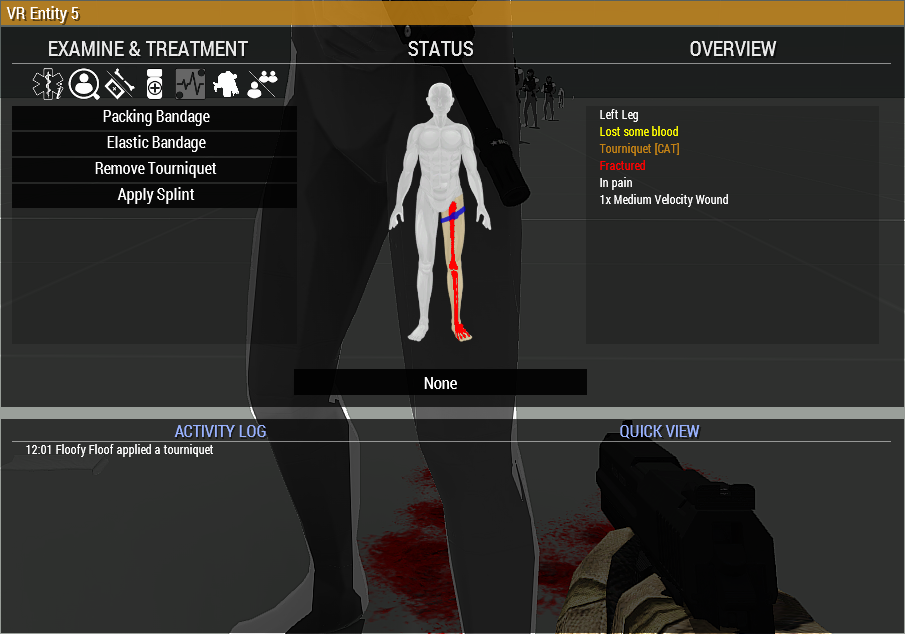
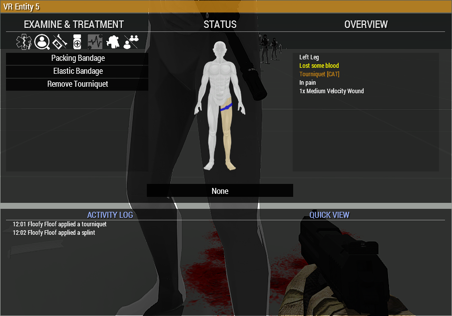
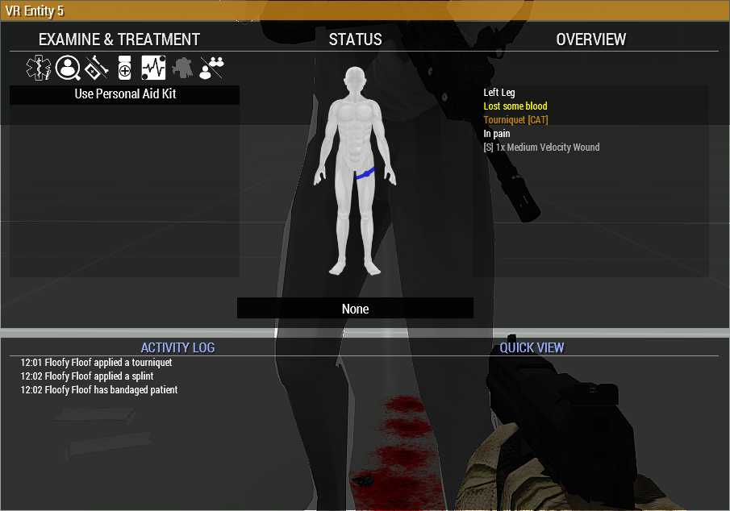

Body colours
- White: no displayed wound.
- Blue: bandaged wounds or bruising.
- Yellow to Red open wounds, increasing in severity.
A blue body part is not necessarily finished and bandaged wounds may still need stitching.
A practical reference guide for ACE medical, our custom settings, and features added by the Misfits Aux mod.

ACEs Medical system can be intimidating at first, but as a group we play with a relatively simple set of options (even where we have turned on some advanced features) that serve to add enough depth to the medical gameplay system without being too intrusive, boring or unneccesary.
As a general rule, you should focus on the following things in any medical situation:
Non-medics: Your job is not to get the casualty up by yourself. Get them out of immediate danger of death and hand them off to a medic.
Medics: Your job is to respond to calls for medics, and organise treatment - dont be afraid to dish out orders to get people away from patients, or providing extra aid to help you out!
Open the medical menu with H, or through ACE interaction. Confirm the patient's name before treating. Select a body region on the figure, then choose the appropriate tab and action.

A blue body part is not necessarily finished and bandaged wounds may still need stitching.


Medication is normally applied to an arm or leg. A tourniquet prevents medication and IV fluid from circulating out of that limb until it is removed. Check the triage log before giving another dose. Players can overdose on certain medication - Morphine in particular decreases HR and BP for up to ten minutes - two doses in <10 minutes is lethal.
ACE does not use any kind of "health bar" for damage. Trauma, blood volume, pain, heart rate, blood pressure, cardiac arrest and medication all interact. The Misfits Aux breathing system adds airway status, breathing and SpO₂ to that recovery loop.
Open and bleeding wounds will prevent a patient from regaining consciousness.
Pain reduces effectiveness, and if it exceeds a threshold it can render a player unconsciousness.
The normal in-game blood volume for players is 5L. There are four states of blood loss.
A normal in-game range for heart rate is ~60-80bpm. Extreme low or high values will render players unconscious.
A product of blood volume and heart rate. Stable values are ~120/80.
Once the dangerous problems are corrected, ACE periodically checks whether an unconscious patient can wake. Epinephrine increases the opportunity for those checks, but is not a flat guarantee that someone can become conscious again.
| Item | What it does | Remember |
|---|---|---|
| Bandage | Closes an open wound and stops that wound bleeding. | Bandaged wounds can reopen until stitched in our advanced setup. |
| Tourniquet (CAT) | Immediately stops bleeding from every wound on an arm or leg. | Temporary only. It causes pain and blocks medication/IV flow through that limb. |
| Splint | Treats a fractured limb and restores mobility according to mission settings. | Control bleeding before worrying about fractures. |
| Morphine | Strong pain relief that lowers heart rate and blood pressure. | Repeated doses can dangerously suppress circulation. Check the treatment log. |
| Painkillers | Gentler pain management without using a morphine injector. | Useful for less severe pain; do not expect an instant full reset. |
| Epinephrine | Raises heart rate and improves an eligible unconscious patient's wake-up chances. | It does not replace blood, close wounds or guarantee consciousness. |
| Adenosine | Lowers an excessively high heart rate under advanced medication. | A specialist corrective drug, not routine casualty treatment. |
| Blood, plasma and saline IVs | Replace lost circulating volume over time. | Medic-restricted in our normal setup. Larger bags are not instant. |
| Surgical Kit / Suture | Closes bandaged wounds so they can no longer reopen. | All eligible wounds must be stitched before our PAK becomes available. |
| Personal Aid Kit (PAK) | Provides definitive full treatment when its requirements are satisfied. | Not a shortcut: stabilise, bandage, stitch and splint first. |

Bandaging turns an open wound into a closed but potentially temporary repair. A medic must use the surgical treatment on bandaged wounds to make that repair permanent. Bruises do not need stitching and do not block the PAK.


Use CPR on a patient in cardiac arrest. CPR is not useful simply because somebody is unconscious. Keep the airway clear, stop blood loss, replace volume where required, and use the diagnostic information rather than administering random medication.
The PAK action remains hidden until the patient meets the configured requirements. In the full workflow this means no open bandageable wounds, all bandaged wounds stitched, required fractures treated, and the patient sufficiently stable. If the action is absent, something remains unresolved.
Dragging starts quickly but is slow. Carrying takes longer to begin but moves faster. The Misfits stretcher can transport a casualty and acts as a medical treatment location when the relevant settings permit it.
Misfits Medical provides a compact KAT-style respiratory loop without oxygen tanks, pneumothorax, chest drains or a full respiratory simulation.
Head extension or turning is fast, free and temporary. Recovery position is a more sustained hands-free measure for an unconscious patient who is breathing and can safely be left positioned. Movement or deterioration may require reassessment.
The reliable item-based method of clearing and maintaining the airway. It replaces several overlapping KAT devices with one easy-to-understand treatment.
Prolonged failure to breathe lowers SpO₂. Severe hypoxia prevents consciousness even when other ACE vitals look acceptable. An airway can be clear while the patient is not breathing if circulation or their wider medical state cannot sustain respiration.
| Item or system | Role | Limits |
|---|---|---|
| Emergency Fluid Bag | A 100 mL emergency blood-volume stopgap usable by non-medics. | Deliberately much weaker than medic IV bags. |
| TXA Injector | Medic treatment that modestly reduces blood loss for a limited time. | Does not bandage, stitch, restore blood or stabilise the patient by itself. |
| Universal Antagonist | Medic-only emergency reset that clears the patient's active medication burden. | Self-administration is allowed for medically qualified players; it does not repair the harm caused by the original condition. |
| Medical Aid Pack | Inventory item deployable as a persistent medical supply case. | Repacking preserves the remaining contents and does not refill it. |
| Stretcher | Moves casualties and can provide a medical-facility treatment position. | Can be folded and recovered when no longer required. |
| Vanilla kit conversion | Converts retrieved First Aid Kits and Medikits into configured ACE supplies. | The output is controlled by the Aux configuration. |
| Misfits Serum | A joke injectable with a mild heart-rate, visual and short movement-speed effect. | Not a legitimate stabilisation treatment. |
| Misfits Essential Oils | Consumes an item, records a treatment and dispenses questionable wisdom. | Changes absolutely no medical state. |
Do not load Misfits Airway alongside KAT Airway. The Misfits system is the group's compact alternative, not a compatibility layer for the full KAT respiratory simulation.
When in doubt: stop adding drugs, check the triage log, repeat the vital checks, and work the problem in order.